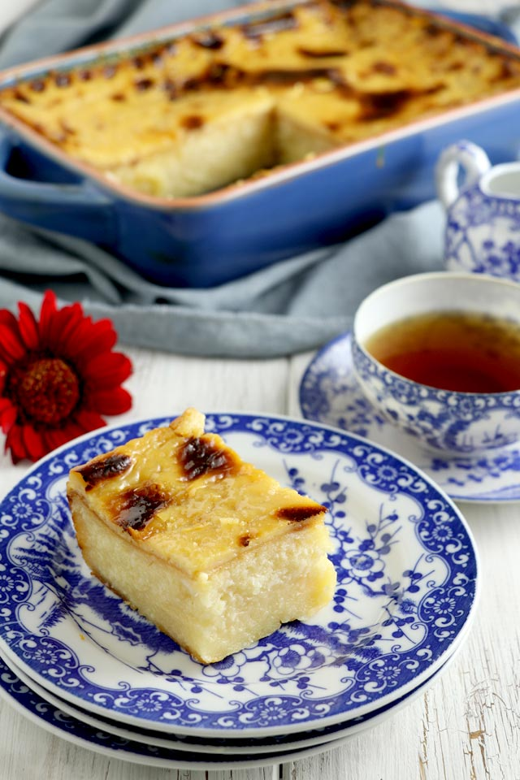

History
During the 16th century Latin Americans imported cassava into the Philippines, then cassava cake became a thing. Cassava cake or “bibingkang kamoteng kahoy” is a traditional Filipino moist cake made from grated cassava, coconut milk, and condensed milk with a custard layer on top. Cassava cake is a type of bibingka having its origins from adopting native recipes but using cassava instead of the traditional glutinous rice. Cassava is made from grated cassava mixed with gata (coconut milk), condensed milk, and egg whites. The texture of the cake varies from the amount of cassava used.

Make One
Ingredients
By Deb from foxyfolksy.com.
- 1 pack (16 oz) frozen, grated cassava - thawed
- 1 cup desiccated coconut - (optional)
- ¾ can (1 can is 14 oz) condensed milk
- ¾ can (1 can is 12.05 fl oz) evaporated milk
- ¾ can (1 can is 13.5 fl oz) coconut milk
- 5 tablespoons sugar
- 2 egg yolks
FOR THE CUSTARD TOPPING
- ¼ can condensed milk
- ¼ can evaporated milk
- ¼ can coconut milk
- 2 egg yolks
- 1 tablespoon flour - dissolved in 2 tablespoons milk
Procedure
- Grease pan or baking dish with butter and set aside.
- In a big, deep bowl, combine all the ingredients for the cassava cake and mix well until the sugar is dissolved.
- Pour the mixture into the greased pan or baking dish and bake for 45 minutes to 1 hour at 375°F/180°C.
- After the cake is baked, combine and mix all the ingredients for the custard in a bowl. Pour this on top of the pre-baked cassava cake and bake for another 15-25 minutes or until custard is cooked and turns golden.